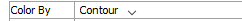
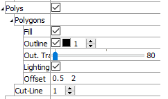
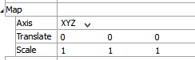

Geometry
Description
Geometric data. Geometric data may be imported from DXF, STL, GEOM, or other data formats. The first few attributes of this plot item are contingent on the first attribute (Type).
Attributes
Type
Set either a “label” or a “contour” to be colored on the plot item.
ColorBy/ContourBy

Specify which label or value (as determined by the previous setting) to display in the plot item. The options for both are shown on the following table. Some options will require additional, dynamically-provided attributes in order to complete the selection; these are indicated with notations on the table.
| ColorBy | ContourBy |
|---|---|
| Type | Node Extra |
| Set | Extra |
| Extraᵉ | Field Dataᶠ |
| Groupˢ |
| Key: |
| ᶜA “Component” attribute follows |
| ᵉAn “Index” attribute follows |
| ᶠA “Field Data” (and other) attributes follow |
Color-List/Contour
The attribute appearing in this position is either a Color-List or a Contour, depending on the “Color By” selection. Refer to the standard color-list control description and the standard contour control description for details.
Sets
Control display of individual sets from the list of sets available.
Sets: this is a container of the items on the list of sets. It also provides: an edit field for adding new set names to the list (whether or not a set with that name exists in the model); select None button; select all button; invert selected button; and an “Add” button for adding new set(s) from a file.
[Item]: Display (checked) the item.
Nodes
Specify how nodes are to be displayed.
Nodes: Specify which nodes to display (the options are: “On”, “Off”, “FreeOnly”).
Quality: Specify the quality of node display (nodes become more spherical as the value is increased).
Edges
Specify how edges are to be displayed.
Edges: Specify which edges to display (the options: “On”, “Off”, “FreeOnly”).
Line: sets the line style and thickness of the edges of the plot item.
Polys
Specify how polygons are to be displayed.
Polys: Displays (checked) the plot item’s polygons.
Polygons: A container for settings that control how polygons are rendered. Open this control for additional settings as follows.
Fill: Render the plot item filled when checked. If unchecked, only the wireframe is rendered.
Outline: Sets whether to display object outlines, with additional settings to control color and width of outlines.
Out Trans.: Set outline transparency (0 = fully opaque; 100 = invisible).
Lighting: sets whether or not to render the item with a light source located over the viewer’s right shoulder; this causes the parts of the item closest to the source to appear brighter than those parts further away.
Offset: sets the settings for the OpenGL polygon offset; in the event of poor rendering of polygons, setting these values close to zero may improve performance (the first value is a factor that specifies a scale factor to create a variable depth offset for each polygon, the second value is used to create a constant depth offset).
Cutline: Sets the thickness of the line(s) that represent the location of the cut plane.
Map
Transform the orientation, location, or scale of the plot item according to the settings provided. This attribute allows multiple, differently visualized instances of a plot item to be rendered adjacent to one another, for instance.
Axis: Specify a coordinate transformation to use assuming a normal order of {XY in 2D; XYZ in 3D} (XZY, for instance, indicates that the Y and Z coordinates are swapped).
Translate: Translate the rendered objects’ {\(x\) and \(y\) in 2D; \(x\), \(y\), and \(z\) in 3D} positions by the specified model units.
Scale: Set the plot item size to the specified percentage of the program window’s size.
Legend
Set display of the item in the plot legend. All plot items, at minimum, have a Title attribute.
Legend: Show (checked) all information about the plot item in the legend.
Title: Show (checked) the title of the plot item in the legend. The “Alias:” field may be used to specify a custom title for the item.
Size: Set the size of text in the legend.
Font: Set the font face used for the text.
Style: Set the text style (the options are normal, bold, italic, bold-italic).
Color: Set the text color.
Beneath Title, the Geometry plot item also provides controls in Legend for Map and Color-List (which provides sub-controls for Label and Heading). The sub-attributes of each are the same as those for Title.
| Was this helpful? ... | UDEC © 2018, Itasca | Updated: Mar 15, 2024 |